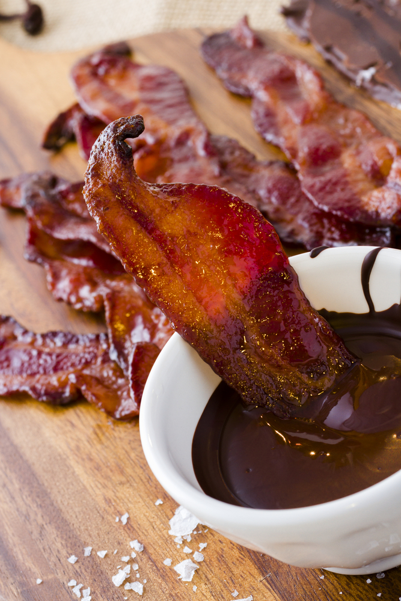

Chocolate Covered Bacon

A decadent combo of sweet and savory.
Sweet meets salty in this recipe for Chocolate-Covered Bacon. If you've never tried bacon and chocolate together, you might be surprised at how well rich, semi-sweet chocolate complements the smoky flavor of crispy bacon.
Ingredients
- 1 semi-sweet bag of chocolate chips
- 1 pound thick cut bacon
Directions
- Heat large skillet on high; add bacon strips.
- Turn bacon strips over as needed with tongs.
- Cook back until it’s reduced to about ¼ of its original size and appears to be crispy. (Personally I believe that the bacon should be crispy; however if you prefer your chocolate covered bacon chewy opposed to crunchy then reduce cooking time by removing your bacon earlier).
- Drain bacon on papertowels to remove grease.
- While the bacon is cooling fill the double boiler or medium sauce pan with water and bring to a medium heat.
- Place double boiler top pan in double boiler bottom pan or put the small sauce pan in the medium sauce pan.
- Slowly add chocolate morsels into top pan and stir while morsels melt. Do this until all morels have been added. (Be sure to keep stirring to prevent the chocolate from burning.).
- Using your fingers or tongs carefully dip the bacon strips into the chocolate, if necessary use a spoon to spoon the melted chocolate over the bacon evenly coating it.
- Once coated lay strips on cooling rack (with something underneath to catch the drips) or waxed paper lined cookie sheet. Cool in refrigerator for 15 minutes to set chocolate.